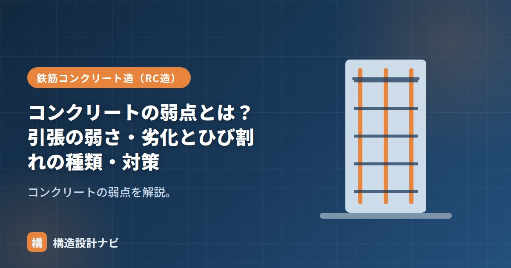

コンクリートの弱点とは？引張の弱さ・劣化とひび割れの種類・対策

コンクリートは圧縮に強く耐久性も高い優れた材料ですが、いくつかの明確な弱点があります。これを理解することが、RC造を正しく設計・維持する出発点です。この記事では「引張の弱さ」「劣化」「ひび割れ」の3つの弱点と対策を整理します。
弱点①：引張に弱い
コンクリートの最大の弱点は、引張強さが圧縮強さの約1/10しかないことです。引っ張られるとすぐにひび割れてしまいます。そこで、引張に強い鉄筋を引張側に配置して補うのが鉄筋コンクリート（RC）です。詳しい仕組みは「コンクリートと鉄筋の関係」で解説しています。
弱点②：劣化（鉄筋を守れなくなる）
コンクリートは本来アルカリ性で、内部の鉄筋を錆から守っています。しかし年月とともに性質が変化し、鉄筋を守れなくなることがあります。代表的な劣化メカニズムは次のとおりです。
| 劣化 | メカニズム |
|---|---|
| 中性化 | 空気中のCO₂でコンクリートがアルカリ性を失い、鉄筋が錆びやすくなる。錆びると膨張してコンクリートを押し割る。 |
| 塩害 | 海砂や海風の塩分（塩化物イオン）が鉄筋を錆びさせる。海沿いで顕著。 |
| 凍害 | 内部の水分が凍結・融解を繰り返し、表面がボロボロに剥がれる。寒冷地で発生。 |
| アルカリ骨材反応 | 骨材とアルカリ分が反応してコンクリートが膨張し、ひび割れる。 |
これらの多くはかぶり厚さ（鉄筋を覆うコンクリートの厚み）を確保することで進行を遅らせられます。かぶりが大きいほど、外部の劣化要因が鉄筋に届くまで時間がかかります。
弱点③：ひび割れ
コンクリートはひび割れやすい材料です。ひび割れ自体は避けられませんが、原因によって種類が異なり、対策も変わります。
| ひび割れの種類 | 原因 | 主な対策 |
|---|---|---|
| 乾燥収縮ひび割れ | 硬化時に水分が抜けて縮む | 収縮目地、配筋、適切な水セメント比 |
| 沈下（沈み）ひび割れ | 打設後に骨材が沈み、鉄筋上面に発生 | 適切な締固め・打設管理 |
| 温度ひび割れ | セメントの発熱と冷却の温度差 | 低発熱セメント、打設計画 |
| 構造ひび割れ | 過大な荷重・地震で生じる | 適切な構造設計・配筋 |
- 引張の弱さは鉄筋で、劣化・ひび割れはかぶり厚さ・水セメント比・配筋・目地で対策する。
- 「ひび割れ＝即危険」ではない。幅と位置で評価し、構造ひび割れか乾燥収縮かを見分けることが大切。
- 水セメント比（水の割合）を小さくするほど、強度・耐久性が上がりひび割れも減る。
竣工後にひび割れの相談を受けたら、まずクラックスケールで幅を測ります。細く規則的に入る乾燥収縮ひび割れは経過観察でよいことが多い一方、斜めに不規則に走るものは構造的な要因を疑い、詳細調査へ進むかどうかの判断基準にしています。
弱点を補う仕組みは「コンクリートと鉄筋の関係」、RC造全体は「鉄筋コンクリート造（RC造）とは？」、耐震性は「RC造の耐震性と特徴」をどうぞ。
中性化の進行と鉄筋腐食（図解）
RC造の寿命を決める最大の要因が、中性化による鉄筋の腐食です。どのように進行するのかを段階で見てみましょう。
中性化の進行深さは、おおむね経過年数の平方根に比例して進むことが知られています。つまり最初の数年で急速に進み、その後は徐々に緩やかになります。したがって、かぶり厚さを少し増やすだけで、鉄筋に到達するまでの年数は大きく延びることになります。
かぶり厚さの規定
かぶり厚さは、鉄筋の表面からコンクリート表面までの最短距離です。耐久性と耐火性を確保するため、部位ごとに最小値が定められています。
| 部位 | 最小かぶり厚さの目安 |
|---|---|
| スラブ・耐力壁以外の壁（屋内） | 20mm |
| 柱・梁・耐力壁（屋内） | 30mm |
| 柱・梁・スラブ・壁（屋外・土に接しない） | 30〜40mm |
| 土に接する部分 | 40mm以上 |
| 基礎（捨てコンクリート部分を除く） | 60mm以上 |
※値は代表例です。実際は建築基準法施行令およびJASS5等で確認してください。
屋外や土に接する部分でかぶりが大きいのは、雨水や土中の水分・塩分といった劣化要因にさらされるためです。また、施工誤差を見込んで、設計かぶり厚さは最小かぶり厚さより10mm程度大きく設定するのが一般的です。配筋検査でスペーサー（かぶりを確保する部品）の設置状況が重視されるのは、この寸法が建物の寿命に直結するからです。
よくある質問
Q1. ひび割れは何mm以上なら補修が必要ですか？
一般に、幅0.3mmを超えるひび割れは補修の検討対象とされます。これは、この幅を超えると雨水や二酸化炭素が内部まで浸入しやすくなり、鉄筋の腐食を早めるためです。ただし判断は幅だけでなく、位置・方向・進行性も重要です。柱や梁に斜めに入るひび割れは構造的な要因の可能性があるため、幅が小さくても調査が必要です。
Q2. コンクリートは何年もつのですか？
適切に設計・施工されたRC造の計画供用期間は、標準的な仕様で65年程度、耐久性に配慮した仕様で100年程度が目安とされます。実際の寿命を左右するのは中性化や塩害による鉄筋腐食で、これはかぶり厚さと水セメント比に大きく依存します。逆に言えば、かぶりを確保し密実なコンクリートを打てば、100年を超える耐久性も現実的です。
Q3. アルカリ骨材反応はどう防ぎますか？
3つの方法があります。第一に、反応性のない骨材を使用すること（骨材の試験で確認）。第二に、コンクリート中のアルカリ総量を規制すること（Na₂O換算で3.0kg/m³以下）。第三に、高炉セメントやフライアッシュセメントなど、抑制効果のある混合セメントを使用することです。実務ではこれらのいずれかの対策を選択して実施します。
まとめ
- コンクリートの3大弱点は「引張に弱い」「劣化する」「ひび割れる」。
- 引張は鉄筋で補い、劣化はかぶり厚さ、ひび割れは原因別に対策する。
- 水セメント比を小さく保つことが、強度・耐久性・ひび割れ対策に効く。